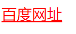

在谈论CSS的概念之前，我们先说一说web标准的目的——其在于创建一个统一的用于web表现层的技术标准，以便通过不同浏览器或终端设备向最终用户展示信息内容。一个网页的呈现是由三部分组成：结构（Structure）、表现（Presentation）和行为（Behavior）。
而三大部分又是由html、css、js来编写组成的：
|
结构 |
HTML |
|
样式 |
CSS |
|
行为 |
JS |
CSS是(Cascading Style Sheets)层叠样式表的缩写 ，简称样式表。
网页设计者使用CSS可以定义元素的样式，包括字体，颜色及其它的高级样式。
采用CSS样式的优点：
1. 提高页面浏览速度。 使用CSS方法，比传统的web设计方法至少节约50%以上的大小。
2. 缩短改版时间，将表现与内容相分离。 只要简单的修改几个CSS文件就可以重新设计一个有成千上万个网页。
3.降低网站流量的费用。带宽要求降低(代码更简洁),成本更低
4.联想容易被搜寻引擎搜索到。 提高网站在百度或google中的排名
5.内容能被更广泛的设备所访问。包括屏幕阅读机，手持设备等。
语法简单说明如下：
|
单个样式： 样式属性名：样式属性值 ; 比如 color:red; |
|
多个样式： 样式属性名：样式属性值 ; 样式属性名：样式属性值 ; 比如 color:red;font-size:120px; |
注意：
1.属性值不需要使用引号括起来，除非属性值是由多个单词组成，如：font-family: "sans serif"；
2.有的属性可以指定多个属性值，多个属性值间以“,”隔开；
3.当定义多个值时，浏览器按照从前向后顺序选择属性值。如果第1个值有效，则尝试使用，如果第1个无效，则使用第2个，依次类推。
①写法一：在标签中的style属性中直接写样式
1 <!-- 写法一 -->
2 <div style="color: red;font-weight: bold;font-style: italic;font-family:楷体;">叠层样式表</div>②写法二：在style标签内书写样式，标签可以放在页面的任何位置；推荐写在head、body中
1 <head>
2 <meta charset="UTF-8">
3 <title>Insert title here</title>
4 <!--div选择器 写法二-->
5 <style type="text/css">
6 div {
7 color: red;
8 font-weight: bold;
9 font-style: italic;
10 font-family:楷体;
11 }
12 </style>
13 </head>
14 <body>
15 <div>叠层样式表</div>
16 </body>③写法三：外部引入样式，实际项目中应用最多，使用link标签进行.css文件外部引用
1 <head>
2 <meta charset="UTF-8">
3 <title>Insert title here</title>
4 <!-- link中必须要有rel和href两个属性 写法三 -->
5 <link rel="stylesheet" href="./css/02-css.css">
6 </head>
7 <body>
8 <!-- 写法三：外部引入样式，实际项目中应用最多，使用link标签进行.css文件外部引用-->
9 <div>叠层样式表</div>
10 </body>.css文件中写入选择器对应的样式列表，如下：
1 @CHARSET "UTF-8";
2 div {
3 color: red;
4 font-weight: bold;
5 font-style: italic;
6 font-family:楷体;
7 }CSS基本选择器比较简单，主要分为：通用选择器、标签选择器、类选择器、ID选择器四大类。直接上代码看一下就懂了：
1 <head>
2 <meta charset="UTF-8">
3 <title>Insert title here</title>
4 <style type="text/css">
5 /* 1.通用选择器
6 *{
7 color: red;
8 font-weight: bold;
9 font-style: italic;
10 font-family:楷体;
11 } */
12 /* 2.标签选择器
13 span{
14 color: red;
15 font-weight: bold;
16 font-style: italic;
17 font-family:楷体;
18 } */
19 /* 3.类选择器
20 .spanstyle{
21 color: red;
22 font-weight: bold;
23 font-style: italic;
24 font-family:楷体;
25 } */
26 /* 4.ID选择器
27 #id1{
28 color: red;
29 font-weight: bold;
30 font-style: italic;
31 font-family:楷体;
32 } */
33 </style>
34 </head>
35 <body>
36 <!-- 选择器：选择器名{样式...}
37 1.通用选择器：*{样式}；找到所有标签，渲染速度不高；
38 2.标签选择器：标签名{样式}；
39 3.类选择器：.类名{样式}，选择器名是class属性的值，class属性值可以有多个相同
40 4.ID选择器：#ID属性值{样式}，ID取值推荐是唯一的，不唯一都会渲染效果、不报错（但实际项目中必须唯一）-->
41 <div>div样式</div>
42 <span class="spanstyle">span样式</span>
43 <a id="id1">a超链接样式</a>
44 </body>CSS其他选择器主要有：多元素选择器、后代选择器、子元素选择器、相邻元素选择器、属性选择器这五大类，具体还是看代码：
1 <head>
2 <meta charset="UTF-8">
3 <title>Insert title here</title>
4 <style type="text/css">
5 /*1.多元素选择器
6 div,span,a{
7 color: red;
8 font-weight: bold;
9 font-style: italic;
10 font-family:楷体;
11 } */
12 /*2.后代选择器
13 #intro p{
14 color: red;
15 font-weight: bold;
16 font-style: italic;
17 font-family:楷体;
18 }*/
19 /*3.子元素选择器
20 #intro > p > span {
21 color: red;
22 font-weight: bold;
23 font-style: italic;
24 font-family:楷体;
25 }*/
26 /*4.相邻元素选择器
27 span + p {
28 color: red;
29 font-weight: bold;
30 font-style: italic;
31 font-family:楷体;
32 }*/
33 /*5.属性选择器
34 a[target]{
35 color: red;
36 font-weight: bold;
37 font-style: italic;
38 font-family:楷体;
39 }
40 a[target=_blank]{
41 color: red;
42 font-weight: bold;
43 font-style: italic;
44 font-family:楷体;
45 } */
46 </style>
47 </head>
48 <body>
49 <!-- 选择器：其他选择器
50 1.多元素选择器：多个标签共用一个样式，写法：标签名1，标签名2，标签名n{样式}
51 2.后代选择器：匹配前面的大类选择器（包含）里面的选择器，渲染后代样式；选择器为两种（大/小），中间用空格
52 3.子元素选择器：选择器名称之间用>符号，和后代选择器作用类似，但支持多级下的子元素渲染，比后代选择器定位更精确
53 4.相邻元素选择器:适用于两个同级别元素之间，使用+号连接，会渲染+号之后的那个元素样式
54 5.属性选择器 ：匹配所有具有attr属性或匹配所有attr属性，且attr属性值为val的元素渲染-->
55 <div>div样式</div>
56 <span class="spanstyle">span样式</span>
57 <p>p1标签样式</p>
58 <a id="id1">a超链接样式</a>
59 <div id="intro">
60 <p>
61 我是大p<br>
62 <span>我是大p里面的span</span>
63 </p>
64 <p>我是小p</p>
65 </div>
66 <span class="spanstyle">span样式</span>
67 <p>p2标签样式</p>
68 <a href="http://www.baidu.com" target="_blank">baidu.com</a><br>
69 <a href="http://www.taobao.com" target="_top">taobao.com</a>
70 </body>另外独立来说一说伪类选择器，CSS伪类选择器主要用于某些选择器添加特殊的效果。主要在支持CSS的浏览器上对链接的不同状态以不同的方式显示。这些状态包括：活动状态（active），已被访问状态(visited)，未被访问状态(link)，和鼠标悬停状态(hover)。
1 a:link {color: #FF0000} /* 未访问的链接 */
2 a:visited {color: #00FF00} /* 已访问的链接 */
3 a:hover {color: #FF00FF} /* 鼠标移动到链接上 */
4 a:active {color: #0000FF} /* 选定的链接 */提示：在 CSS 定义中，a:hover 必须被置于 a:link 和 a:visited 之后，才是有效的。
提示：在 CSS 定义中，a:active 必须被置于 a:hover 之后，才是有效的。
提示：伪类名称对大小写不敏感。
下面以一个a:hover的例子来解释一下伪类选择器的作用：
1 <head>
2 <meta charset="UTF-8">
3 <title>Insert title here</title>
4 <style type="text/css">
5 /*将所有的a标签的状态都修改成下面这样*/
6 a{
7 color:black;
8 text-decoration: none; /*不显示下划线*/
9 }
10 /*当鼠标移上来的状态我们进行单独的修改*/
11 a:hover{
12 color:red;
13 text-decoration: underline;
14 font-size:30px;
15 }
16 </style>
17 </head>
18 <body>
19 <!-- 伪类选择器，主要有四个大的属性：
20 a:link 未访问的链接
21 a:hover 鼠标移动到链接上
22 a:active 选定的链接
23 a:visited 已访问的链接
24 -->
25 <a href="www.baidu.com">百度网址</a>
26 </body>显示效果如下：

更多CSS伪类知识可以参考：http://www.w3school.com.cn/css/css_pseudo_classes.asp
CSS样式是有优先级的，具体的样式优先级（渲染顺序）如下：
!important > 行内样式 > id选择器 > 类选择器 > 标签选择器，在选择器优先级（先看优先级）相同的情况下，参照就近原则，具体示例如下代码：
1 <head>
2 <meta charset="UTF-8">
3 <title>Insert title here</title>
4 <!-- 样式优先级：!important > 行内样式 > id选择器 > 类选择器 > 标签选择器
5 选择器优先级相同，则是就近原则渲染，即渲染先后 -->
6 <style type="text/css">
7 /* div{
8 color:red !important;
9 } */
10 /* #divId{
11 color:green;
12 } */
13 .divClass{
14 color: yellow;
15 }
16 div{
17 color: orange;
18 }
19 div{
20 color:black;
21 }
22 </style>
23 </head>
24 <body>
25 <div id="divId" class="divClass" style="color: blue;">我被渲染了</div>
26 </body>HTML文档以树形结构进行组织，各元素之间是一种层次关系，这种层次关系同样反映在样式表的应用中。具有层次关系的元素之间，内层元素将继承外层元素的样式，多个外层元素中定义的样式将叠加到内层元素。
HTML中，<body>是其他元素的容器，是其他元素的最外层元素，所以<body>元素中定义的样式将影响其他所有元素的显示格式。
具体示例如下：
1 <head>
2 <meta charset="UTF-8">
3 <title>Insert title here</title>
4 <!-- 继承性：具有层次关系的元素之间，内层元素将继承外层元素的样式，多个外层元素中定义的样式将叠加到内层元素 -->
5 <style type="text/css">
6 .divclass{
7 color: blue;
8 border-width:1px;
9 border-style:solid;
10 border-color:red;
11 }
12 </style>
13 </head>
14 <body>
15 <!--
16 border属性的两种写法：
17 第一种写法： border:border-width border-style border-color
18 第二种写法：border-width:blue;
19 border-style:solid;
20 border-color:red;-->
21 <div style="color: blue;border: 1px solid red">
22 <p>字体变红</p>
23 </div>
24 <div class="divclass">
25 <p>字体变红</p>
26 </div>
27 </body>具有继承的CSS属性：
|
说明 |
对应属性 |
|
文本相关的属性是继承的 |
text-align、color、text-indent、font-family、font-size、 font-style、font-weight、 letter-spacing、word-spacing、 text-transform、line-height等
|
|
列表相关的属性是继承的(ul,ol,li) |
list-style、 list-style-image、list-style-position、list-style-type |
本文只列出了本人作为web开发时常用的CSS知识入门进行系统总结，不包含CSS3等特定CSS知识，更多文档及官方知识库请链接w3school官网：
http://www.w3school.com.cn/cssref/index.asp